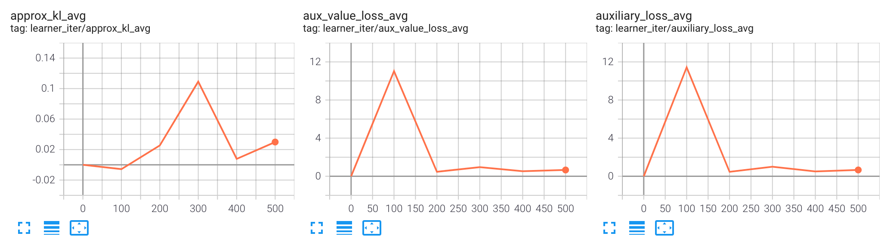

Learner log¶
Basic Guidance¶
If you want to print variables in learner logger. You should concentrate on two components:
Learn Mode Policy
Learner
Policy abstract base class supports two default variables ['cur_lr', 'total_loss'] (in _monitor_vars_learn method). If the policy needs to print more variables, you should change two places:
Additionally add variables’ names in
xxxPolicy’s_monitor_vars_learnmethod. Let’s take PPO as an example:def _monitor_vars_learn(self) -> List[str]: return super()._monitor_vars_learn() + [ 'policy_loss', 'value_loss', 'entropy_loss', 'adv_abs_max', 'approx_kl', 'clipfrac' ]In
Policy’s_forward_learnmethod，return key-value pair in dict type ({'var-name': 'var-value'}). Also takes PPO as an example:def _forward_learn(self, data: dict) -> Dict[str, Any]: # ... # ==================== # PPO update # ==================== # ... return { 'cur_lr': self._optimizer.defaults['lr'], 'total_loss': total_loss.item(), 'policy_loss': ppo_loss.policy_loss.item(), 'value_loss': ppo_loss.value_loss.item(), 'entropy_loss': ppo_loss.entropy_loss.item(), 'adv_abs_max': adv.abs().max().item(), 'approx_kl': ppo_info.approx_kl, 'clipfrac': ppo_info.clipfrac, }
Note
DI-engine uses LoggedModel to track and monitor all variables returned by the policy. LoggedModel saves variables in a sliding window to keep monitoring, and some statistics that you request, for instance, min, max, mean, etc. are calculated. If you are interested, you can refer to autolog for more details. Or you can also skip to the bottom and see Developer view.
Among all the statistics, mean is the commonest and the most important one. As a reulst, DI-engine calculated all scalar type variables’ mean, and print them in text logger & tensorboard logger.
Advanced Guidance¶
1. Irregular Log¶
Each policy’s _forward_learn method will return some related dict type info to learner every iteration, then learner will print the info afterwards.
However, the return info dict does not always have the same keys: Phasic Policy Gradient’s auxiliary loss and TD3’s actor loss will be calculated at some intervals. For example, in PPG, auxiliary losses will be calculated every ten iterations. So in continuous ten iteration, nine will only have basic info, and the left one will have extra auxiliary loss info.
In DI-engine, it is permitted to only return some keys in some iterations’ info dict. And you can print them just as basic info. You can refer to log for more details.
But you must make sure that, in policy’s method _monitor_vars_learn, you must list all keys that may appear in info dict, no matter they appear every iteration or appear periodically. Then learner can utilize sliding window average to print variable’s correct value.
Here is an example from PPG.
Auxiliary losses be calculated every self._cfg.learn.aux_freq iterations.
def _forward_learn(self, data: dict) -> Dict[str, Any]:
if self._train_iteration % self._cfg.learn.aux_freq == 0:
aux_loss, bc_loss, aux_value_loss = self.learn_aux()
return {
# ...
'aux_value_loss': aux_value_loss,
'auxiliary_loss': aux_loss,
'behavioral_cloning_loss': bc_loss,
}
else:
return {
# ...
}
You should list those three losses’ names in method _monitor_vars_learn.
def _monitor_vars_learn(self) -> List[str]:
return [
# ...
'aux_value_loss',
'auxiliary_loss',
'behavioral_cloning_loss',
]
Here is a tensorboard example:
approx_kl is a basic info that appears in every iteration; aux_value_loss and auxiliary_loss is a periodic info, its frequency is 10 iterations.
In DI-engine learner, every variable is averaged in a sliding window, so we can notice that in tensorboard, these three variables are approx_kl_avg, aux_value_loss_avg and auxiliary_loss_avg.
Note
The sliding window has a fixed length, for example, 20 iterations. Basic variable like approx_kl_avg is averaged over 20 values, while periodic variable like aux_value_loss_avg is averaged over only 2 values.
Tip
Since aux_value_loss is calculated every 10 iterations. You should make sure that your sliding window size is larger than 10; Otherwise aux_value_loss might be calculated incorrectly.
2. Other Types of Variables Besides Scalar (e.g. Histogram)¶
For all variables that need to be printed in tensorboard logger, we assume them scalar type by default. If you want to print other types of variables, you need to specify in Policy ‘s _forward_learn method.
For example, for discrete action, you want to know action’s distribution in a batch. You can change as follows:
# in class `xxPolicy`
def _forward_learn(self, data: dict) -> Dict[str, Any]:
# ...
# =============
# after update
# =============
# ...
return {
# ...
'[histogram]action_distribution': data['action'],
}
In the returned dict, the key should be named like '[VAR-TYPE]VAR-NAME', i.e. Use '[]' to denote the variable type.
Note
Since learner uses "[]" to split variable type and its name. As a result, do not use ] in var name!
The tensorboard log will be like:

3. Design Statistics In LoggedModel¶
By default,
LoggedModelwill calculate scalar type variables’ mean value. If you need other types of statistics, you can refer toSampledDataAttrMonitorin buffer, and changeTickMonitorin base learner. You should pay attention to functions like__max_funcimplemented in__registermethod. Also, remember to register a property(e.g.maxmin) of an attribute(e.g.priority).class SampledDataAttrMonitor(LoggedModel): use_max = LoggedValue(int) use_avg = LoggedValue(float) priority_max = LoggedValue(float) priority_avg = LoggedValue(float) priority_min = LoggedValue(float) staleness_max = LoggedValue(int) staleness_avg = LoggedValue(float) def __init__(self, time_: 'BaseTime', expire: Union[int, float]): # noqa LoggedModel.__init__(self, time_, expire) self.__register() def __register(self): def __avg_func(prop_name: str) -> float: records = self.range_values[prop_name]() _list = [_value for (_begin_time, _end_time), _value in records] return sum(_list) / len(_list) if len(_list) != 0 else 0 def __max_func(prop_name: str) -> Union[float, int]: records = self.range_values[prop_name]() _list = [_value for (_begin_time, _end_time), _value in records] return max(_list) if len(_list) != 0 else 0 def __min_func(prop_name: str) -> Union[float, int]: records = self.range_values[prop_name]() _list = [_value for (_begin_time, _end_time), _value in records] return min(_list) if len(_list) != 0 else 0 self.register_attribute_value('avg', 'use', partial(__avg_func, prop_name='use_avg')) self.register_attribute_value('max', 'use', partial(__max_func, prop_name='use_max')) self.register_attribute_value('avg', 'priority', partial(__avg_func, prop_name='priority_avg')) self.register_attribute_value('max', 'priority', partial(__max_func, prop_name='priority_max')) self.register_attribute_value('min', 'priority', partial(__min_func, prop_name='priority_min')) self.register_attribute_value('avg', 'staleness', partial(__avg_func, prop_name='staleness_avg')) self.register_attribute_value('max', 'staleness', partial(__max_func, prop_name='staleness_max'))
How Does DI-engine Record And Print variables In Learner Log? (Developer View)¶
In this section, we will introduce how DI-engine record variables to the sliding window, and how DI-engine print averaged variables to logger. You can skip it if not interested.
In DI-engine, learner get info dict from policy’s _forward_learn method. Then, learner will call LogShowHook (ding/ding/worker/learner/learner_hook.py) to record those variables in a TickMonitor (ding/ding/worker/learner/base_learner.py).
class LogShowHook(LearnerHook):
# ...
def __call__(self, engine: 'BaseLearner') -> None: # noqa
# ...
for k, v in engine.log_buffer['scalar'].items():
setattr(engine.monitor, k, v)
engine.monitor.time.step()
After that, LogShowHook will print variables. LogShowHook will call policy’s _monitor_vars_learn method to get all variables’ names, then get averaged value from TickMonitor and print them in text logger and tensorboard logger.
class LogShowHook(LearnerHook):
# ...
def __call__(self, engine: 'BaseLearner') -> None: # noqa
# ...
iters = engine.last_iter.val
if iters % self._freq == 0:
var_dict = {}
log_vars = engine.policy.monitor_vars()
attr = 'avg'
for k in log_vars:
k_attr = k + '_' + attr
var_dict[k_attr] = getattr(engine.monitor, attr)[k]()
engine.logger.info(engine.logger.get_tabulate_vars_hor(var_dict))
for k, v in var_dict.items():
engine.tb_logger.add_scalar('learner_iter/' + k, v, iters)
engine.tb_logger.add_scalar('learner_step/' + k, v, engine._collector_envstep)